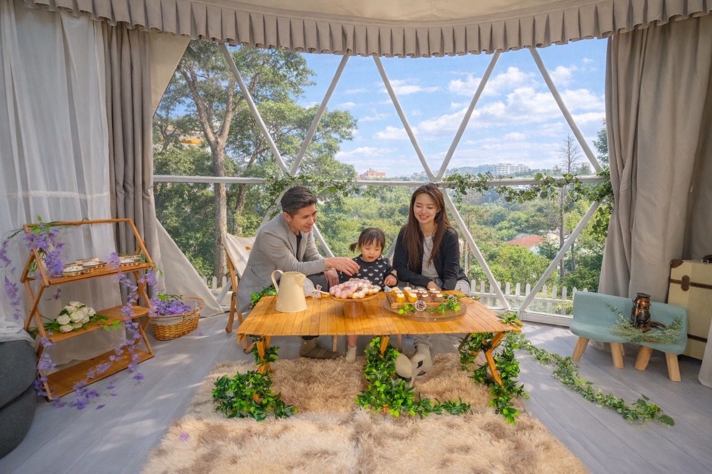

🎉 派對活動
生日與小型派對包場
草地＋圓頂帳篷室內＋戶外廚房與燈光，適合 10–20 人家庭慶生、朋友聚會、抓周儀式與求婚。
生日派對、抓周派對、求婚、小型聚會、親子與寵物寫真，安靜的森林草地只接待一組預約。
10–20 人森林聚會、森林系自然光攝影棚、夜間森林帳篷體驗（夜間延時使用，非旅宿服務）。
Joyforest 是一座藏在城市邊緣的森林系活動空間，用溫暖木色、自然光與草地，為每一場重要時刻留下一個安靜的背景。
預約制使用｜ 單組包場、不與他人共用動線。所有方案皆可加購影像拍攝，讓「當天的氛圍」成為長久的紀念。
從小型派對、親子寵物寫真，到森林攝影棚與夜間森林帳篷體驗，我們以單組預約的方式，保留一整片安靜的森林給你。
草地＋圓頂帳篷室內＋戶外廚房與燈光，適合 10–20 人家庭慶生、朋友聚會、抓周儀式與求婚。
森林系自然光攝影棚，結合專業打光、寵物友善道具與溫暖木質背景，適合親子家庭與毛孩寫真。
提供攝影師、品牌與製作公司使用的森林棚租方案，平面與動態拍攝皆可，備有電力與休息區。
在燈光與柴火氛圍中，與少數家人好友延長相聚時間，享受溫暖木系帳篷與草地的靜謐夜晚。
從白天的綠意草地到夜間的微光與柴火，這裡是一塊可以自由佈置、拍照、聊天與發呆的森林背景。



以下為常見組合與起始費用，實際依日期、人數與使用時段調整。所有方案皆採預約制，填寫預約頁即可收到詳細回覆。
草地＋圓頂帳篷室內＋戶外廚房與投影，適合生日、小型聚會與家庭慶祝。
可依需求加時，超時與延長使用將於預約回覆中說明。
森林系自然光攝影棚，搭配溫暖木色背景與寵物友善空間，適合家庭與毛孩合照。
半小時起拍，至少 50 張、基本調色，照片全給。精修人物／毛孩 NT$ 380 / 張。
若你本身是攝影師或品牌，也可以只租用 Joyforest 作為森林場景，或加購活動紀錄服務。
活動拍照＋微電影短片組合 NT$ 8,800，商業與品牌拍攝依專案報價。
Joyforest 位於桃園楊梅一帶，兼顧「離城市不遠」與「安靜森林感」，詳細位置將在預約確認後提供。
* 地址僅顯示「桃園楊梅」，完成預約後將提供詳細位置與停車說明。
Joyforest 為森林系活動包場空間，採單組預約制、不對外開放臨時參觀。若你想先了解動線與場景，可透過預約表單索取更多照片與影片。
更多細節會在預約回覆中一併提供，這裡先整理幾個大家最常問的重點。
Joyforest 是以森林草地與圓頂帳篷為核心的活動包場與攝影棚空間，採單組預約，不與其他團體共用。 無論是抓周派對、好友生日或求婚，都能保留安靜且專屬的氛圍。
歡迎自帶餐點、甜點與飲品，我們提供戶外廚房區域協助擺盤與簡易料理。目前 Joyforest 不提供餐飲服務，可搭配你習慣的外送或餐飲合作夥伴。
場地非常適合親子與寵物家庭，一般建議聚會人數 10–20 人內較舒適。 毛孩可以在草地活動，但仍需由飼主自行照顧、留意安全與清潔。
夜間森林帳篷體驗是指在活動後保留一段延長相聚的時光，於森林帳篷與草地區域放鬆。 這屬於夜間延時使用，定位為活動空間延長使用，非旅宿服務。
告訴我們活動類型、預計人數與日期時段，Joyforest 會回覆最適合你的方案與費用建議。